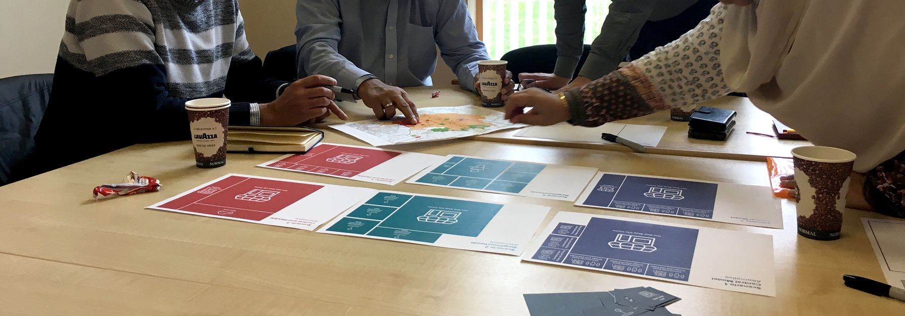

Design for health and wellbeing
Creative facilitation and design probes that help participation, inclusion and communication — often to gain a better understanding of others, and within ourselves.

Mindnosis
A mental health self-assessment kit, born from my own experience at 17, that helps people understand what kind of support they need and where to find it — without the friction and stigma of traditional services.

Co-design workshops
Card-based and paper tools built with people with lived experience of mental illness, used to raise questions and open conversations that are hard to start otherwise.

Making services visible
A board-game format used to make an opaque mental health care pathway tangible and discussable for both patients and clinical staff.
Creative wellbeing sessions for teams
A hands-on, design-led workshop that gives people a simple, non-clinical way to check in on how they're doing — evolved from Mindnosis for a workplace, school, or care setting.
Every session starts with a short call to tailor content to your context, and ends with a light digital follow-up tool participants can return to individually.